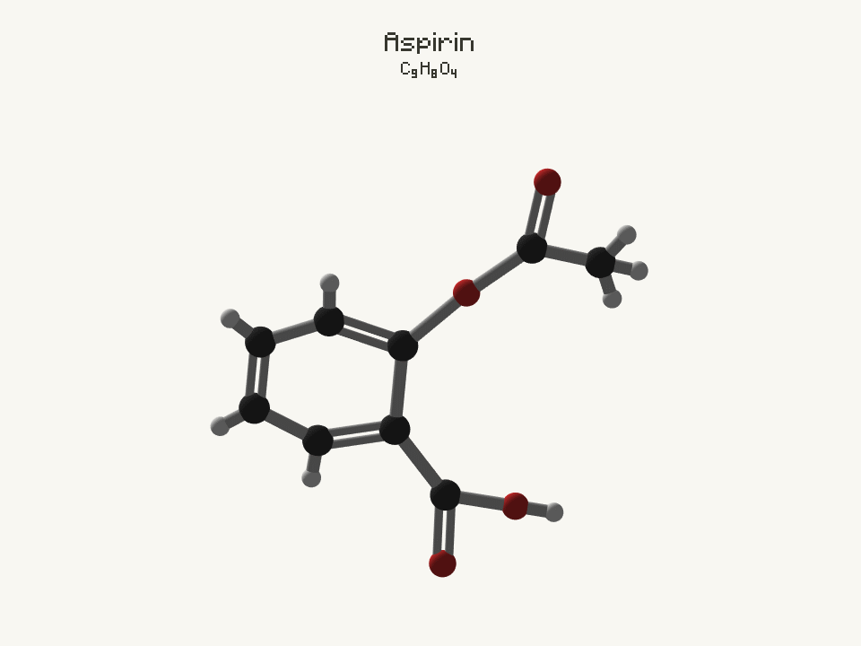
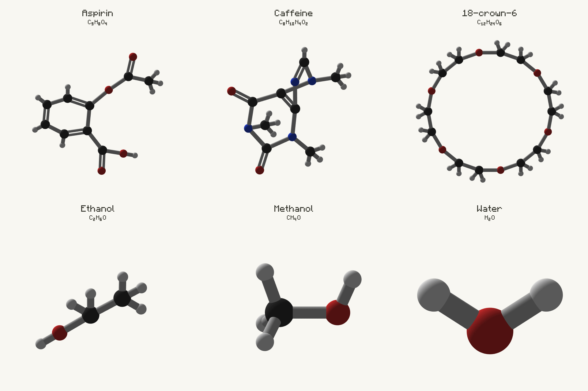
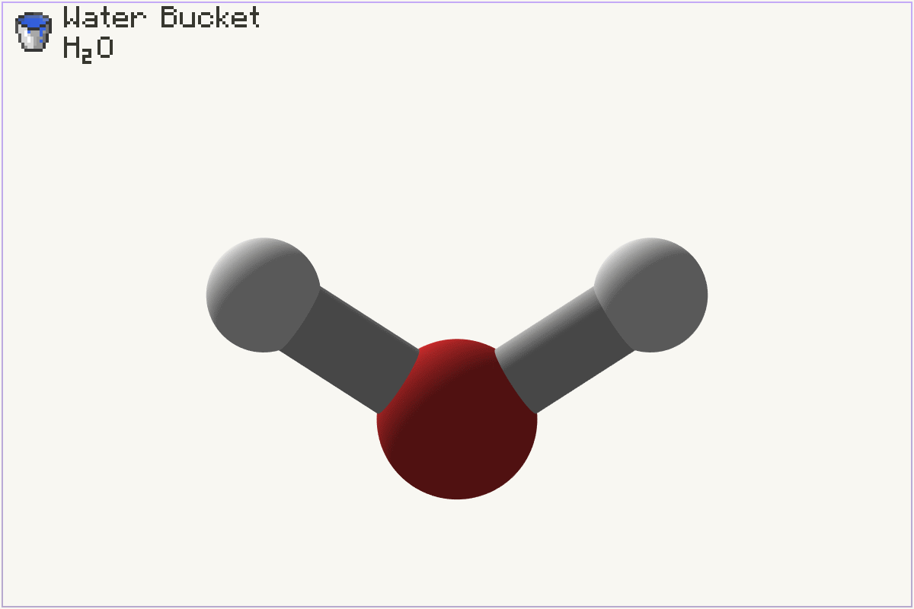
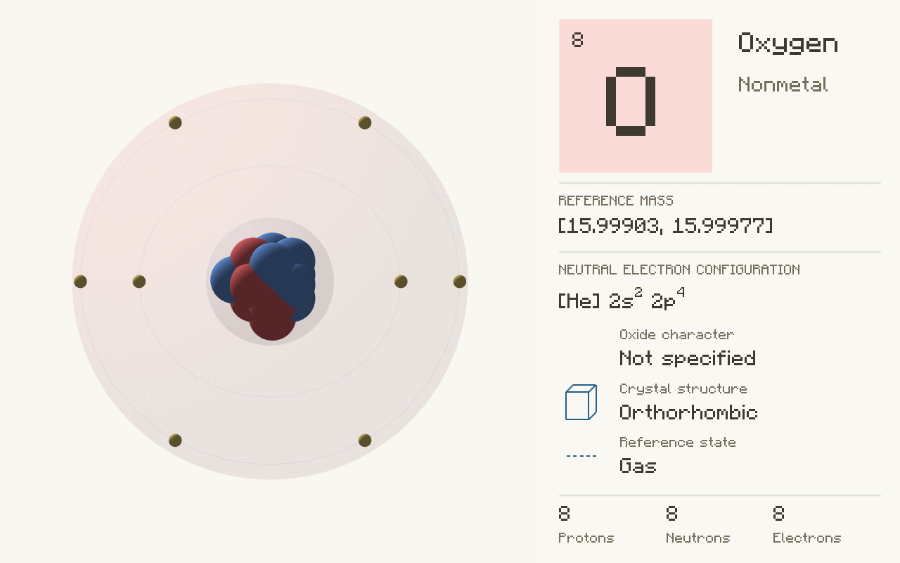
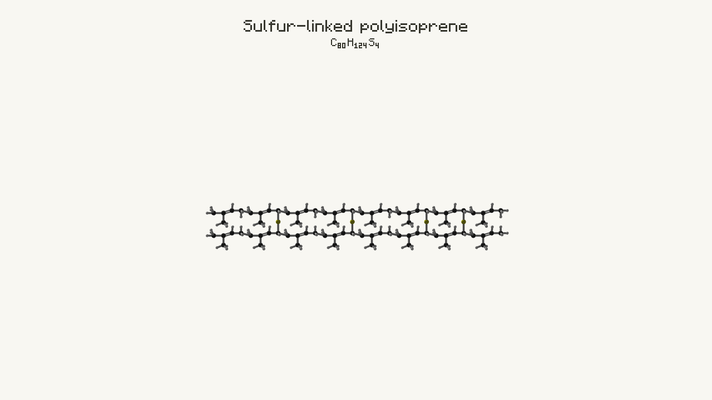

Avogadro guide · Minecraft 1.12.2 / Cleanroom
Export images and animations
Save a rotating molecule as a GIF or MP4, or export an item card, atom view, or polymer preview. Each example supplies the model and export settings, submits the request on the client thread, and keeps the returned job to check its result.
Java imports
import io.github.wurtzitane.avogadro.api.*;
import io.github.wurtzitane.avogadro.molecule.*;
// Client code only:
import io.github.wurtzitane.avogadro.api.client.*;
import io.github.wurtzitane.avogadro.client.export.*;
import java.util.List;
import java.util.Map;
import java.io.IOException;
import java.nio.file.Path;
import java.util.function.Consumer;
import net.minecraft.client.Minecraft;
import net.minecraft.item.ItemStack;
Export a rotating aspirin GIF
Context: client thread, after guide:aspirin is loaded. Read it
with
Avogadro
and handle a missing definition before submitting.
Java · add this method to your class.
public static ExportJob exportGif(MoleculeDef aspirin) throws IOException {
var options = ExportOptions.builder(1)
.size(960, 720)
.fps(20)
.secondsPerRotation(3)
.background(0xf8f7f2)
.filename("aspirin.gif")
.build();
return AvogadroClientApi.exports()
.submit(MediaExportRequest.molecule(aspirin)
.options(options)
.build());
}
Groovy · same API; place methods in your script or client helper as described.
static ExportJob exportGif(MoleculeDef aspirin) throws IOException {
def options = ExportOptions.builder(1)
.size(960, 720)
.fps(20)
.secondsPerRotation(3)
.background(0xf8f7f2)
.filename("aspirin.gif")
.build();
return AvogadroClientApi.exports()
.submit(MediaExportRequest.molecule(aspirin)
.options(options)
.build());
}


<game directory>/.
Reusing that filename fails rather than overwriting.
Export several models in one gallery
Java · add this method to your class.
public static ExportJob exportGallery(List<MoleculeDef> molecules) throws IOException {
// Size is the whole canvas, not each cell. Keep the count equal to the list size.
var options = ExportOptions.builder(molecules.size())
.size(1920, 1280)
.columns(3)
.fps(20)
.secondsPerRotation(3)
.background(0xf8f7f2)
.filename("gallery.gif")
.build();
return AvogadroClientApi.exports()
.submit(MediaExportRequest.molecules(molecules)
.options(options)
.build());
}
Groovy · same API; place methods in your script or client helper as described.
static ExportJob exportGallery(List<MoleculeDef> molecules) throws IOException {
// Size is the whole canvas, not each cell. Keep the count equal to the list size.
def options = ExportOptions.builder(molecules.size())
.size(1920, 1280)
.columns(3)
.fps(20)
.secondsPerRotation(3)
.background(0xf8f7f2)
.filename("gallery.gif")
.build();
return AvogadroClientApi.exports()
.submit(MediaExportRequest.molecules(molecules)
.options(options)
.build());
}


Export caffeine as MP4
Java · add this method to your class.
public static ExportJob exportMp4(MoleculeDef caffeine,
Path ffmpeg) throws IOException {
var options = ExportOptions.builder(1)
.format(ExportOptions.Format.MP4)
.size(1920, 1080)
.fps(24)
.secondsPerRotation(3)
.background(0xf8f7f2)
.encoder(ffmpeg.toString())
.filename("caffeine.mp4")
.build();
return AvogadroClientApi.exports()
.submit(MediaExportRequest.molecule(caffeine)
.options(options)
.build());
}
Groovy · same API; place methods in your script or client helper as described.
static ExportJob exportMp4(MoleculeDef caffeine, Path ffmpeg) throws IOException {
def options = ExportOptions.builder(1)
.format(ExportOptions.Format.MP4)
.size(1920, 1080)
.fps(24)
.secondsPerRotation(3)
.background(0xf8f7f2)
.encoder(ffmpeg.toString())
.filename("caffeine.mp4")
.build();
return AvogadroClientApi.exports()
.submit(MediaExportRequest.molecule(caffeine)
.options(options)
.build());
}

Install FFmpeg with libx264. Pass its executable path, set
AVOGADRO_, or make it available on PATH. MP4 requires an opaque
background. The library does not bundle the encoder.
Export an item card
Use a nonempty held item with a loaded molecule association. The screenshot below uses the water bucket bound by our water definition. Item metadata, NBT, and capability contents are retained in the accepted selection.
Java · add this method to your class.
public static ExportJob exportItemCard(ItemStack held) throws IOException {
var selection = ItemExportSelection.select("held", null, held);
var media = ExportOptions.builder(1)
.size(1200, 800)
.fps(20)
.secondsPerRotation(3)
.showName(true)
.showFormula(true)
.textScale(2)
.background(0xf8f7f2)
.filename("water-card.gif")
.build();
return AvogadroClientApi.exports()
.submit(
MediaExportRequest.item(ItemExportOptions.of(selection, media, 2))
.build());
}
Groovy · same API; place methods in your script or client helper as described.
static ExportJob exportItemCard(ItemStack held) throws IOException {
def selection = ItemExportSelection.select("held", null, held);
def media = ExportOptions.builder(1)
.size(1200, 800)
.fps(20)
.secondsPerRotation(3)
.showName(true)
.showFormula(true)
.textScale(2)
.background(0xf8f7f2)
.filename("water-card.gif")
.build();
return AvogadroClientApi.exports()
.submit(
MediaExportRequest.item(ItemExportOptions.of(selection, media, 2))
.build());
}


The item scale is an integer from 1 to 8; dimensions must be divisible by it. Cards require
an opaque background. The API takes Item; the
equivalent command is /.
Export an atom and its details
The explicit water recipe supplies oxygen-16 and hydrogen-1 configurations. A SMILES-only water definition does not automatically have this data. Java atom indices start at zero.
Java · add this method to your class.
public static ExportJob exportAtom(MoleculeDef water) throws IOException {
var options = ExportOptions.builder(1)
.size(1280, 800)
.fps(20)
.secondsPerRotation(3)
.background(0xf8f7f2)
.filename("oxygen.gif")
.build();
return AvogadroClientApi.exports()
.submit(
MediaExportRequest.atom(new AtomExportOptions(water,
0,
true))
.options(options)
.build());
}
Groovy · same API; place methods in your script or client helper as described.
static ExportJob exportAtom(MoleculeDef water) throws IOException {
def options = ExportOptions.builder(1)
.size(1280, 800)
.fps(20)
.secondsPerRotation(3)
.background(0xf8f7f2)
.filename("oxygen.gif")
.build();
return AvogadroClientApi.exports()
.submit(
MediaExportRequest.atom(new AtomExportOptions(water,
0,
true))
.options(options)
.build());
}


Use details=false for atom-only rendering; transparent GIF is then allowed.
Atomic details require an opaque background. MoleculeRenderOptions are not supported for
atomic exports.
Export the exact network you are viewing
Java · add this method to your class.
public static ExportJob exportNetwork(PolymerPreview successfulPreview) throws IOException {
var options = ExportOptions.builder(1)
.size(1280, 720)
.fps(20)
.secondsPerRotation(3)
.background(0xf8f7f2)
.filename("polyisoprene.gif")
.build();
return AvogadroClientApi.exports()
.submit(MediaExportRequest
.polymer(successfulPreview, "Sulfur-linked polyisoprene")
.options(options)
.build());
// Success also writes polyisoprene.gif.json with the exact recipe, parameters, and seed.
}
Groovy · same API; place methods in your script or client helper as described.
static ExportJob exportNetwork(PolymerPreview successfulPreview) throws IOException {
def options = ExportOptions.builder(1)
.size(1280, 720)
.fps(20)
.secondsPerRotation(3)
.background(0xf8f7f2)
.filename("polyisoprene.gif")
.build();
return AvogadroClientApi.exports()
.submit(MediaExportRequest
.polymer(successfulPreview, "Sulfur-linked polyisoprene")
.options(options)
.build());
// Success also writes polyisoprene.gif.json with the exact recipe, parameters, and seed.
}


Download the reproduction sidecar. Supply the last
successful preview, not a pending request or freshly rebuilt default. The result’s
reproduction() path points to the saved metadata. An unregistered finite model
can also be exported:

Java · add this method to your class.
public static ExportJob exportUnregistered(MoleculeStructure structure) throws IOException {
String formula = MoleculeLoader.formula(structure);
return AvogadroClientApi.exports()
.submit(MediaExportRequest
.structure(structure, "Finite authored model", formula, null)
.build());
}
Groovy · same API; place methods in your script or client helper as described.
static ExportJob exportUnregistered(MoleculeStructure structure) throws IOException {
String formula = MoleculeLoader.formula(structure);
return AvogadroClientApi.exports()
.submit(MediaExportRequest
.structure(structure, "Finite authored model", formula, null)
.build());
}
Progress, completion, and cancellation
Completion callbacks run on the client thread. Use outputPath() to show the
saved filename and directory as text.
Java · add this method to your class.
import io.github.wurtzitane.avogadro.api.client.MediaExportJob;
import java.util.function.Consumer;
public class ExampleOperation {
public static void watch(MediaExportJob job, Consumer<String> showStatus) {
job.onComplete(result -> showStatus.accept(!result.outputPath()
.isEmpty()
? "Saved " + result.outputPath()
: result.failure() == null
? "Export cancelled"
: "Export failed: " + result.failure()));
}
}
Groovy · same API; place methods in your script or client helper as described.
import io.github.wurtzitane.avogadro.api.client.MediaExportJob
import java.util.function.Consumer
static void watch(MediaExportJob job, Consumer<String> showStatus) {
job.onComplete {
result -> showStatus.accept(!result.outputPath()
.isEmpty()
? "Saved " + result.outputPath()
: result.failure() == null
? "Export cancelled"
: "Export failed: " + result.failure())
}
}
Java · add this method to your class.
public static String progress(ExportJob job) {
var progress = job.progress(); // immutable, safe to read from another thread
return progress.state() + ": " + progress.encodedFrames() + "/" + progress.totalFrames();
}
Groovy · same API; place methods in your script or client helper as described.
static String progress(ExportJob job) {
def progress = job.progress(); // immutable, safe to read from another thread
return progress.state() + ": " + progress.encodedFrames() + "/" + progress.totalFrames();
}
Java · add this method to your class.
public static boolean cancel(ExportJob job) {
// Requests cancellation; result() remains null until cleanup finishes.
return job.cancel();
}
Groovy · same API; place methods in your script or client helper as described.
static boolean cancel(ExportJob job) {
// Requests cancellation; result() remains null until cleanup finishes.
return job.cancel();
}
| Situation | Behavior | What your UI should do |
|---|---|---|
| No terminal result yet |
job.
|
Keep progress visible; do not block the client thread |
| Success | SUCCEEDED with output path | Offer open/save actions |
| User cancels | CANCELLED after cleanup | Stop progress; do not show a failure |
| Capture/encoder fails | FAILED with failure text | Show the failure and allow a new submission |
| Another export is active | Submission throws IOException; no silent queue | Keep the active job and explain busy state |
| Late listener | Receives the retained result once on the client thread | Safe to register after completion |
| Listener throws | Other listeners and the outcome remain intact | Handle your own UI exceptions |
| Finished handle is cancelled | Cannot cancel a later export | Keep each handle tied to its own UI row |
Each completion listener runs once on the client thread, after frame capture and the encoder have finished cleaning up. You may read progress or request cancellation from other threads. The export may finish just before cancellation reaches it, so check the cancellation return value and the final success, cancellation, or failure result.
Submit from the client thread
Java · add this method to your class.
public static void exportFromWorker(MoleculeDef molecule,
java.util.function.Consumer<ExportJob> ready) {
Minecraft.getMinecraft()
.addScheduledTask(() -> {
try {
ready.accept(exportGif(molecule));
} catch (IOException failure) {
throw new IllegalStateException("Could not start export", failure);
}
});
}
Groovy · same API; place methods in your script or client helper as described.
static void exportFromWorker(MoleculeDef molecule,
java.util.function.Consumer<ExportJob> ready) {
Minecraft.getMinecraft()
.addScheduledTask(() -> {
try {
ready.accept(exportGif(molecule));
} catch (IOException failure) {
throw new IllegalStateException("Could not start export", failure);
}
});
}
The facade is quiet by default. Attach your own status UI or listener. Existing commands use the same engine and add chat reporting. Request validation happens for every entry point, including directly constructed options.
Export options and limits
| API option / command | Default / accepted values | Notes |
|---|---|---|
| format / --format | GIF; GIF or MP4 | GIF included; MP4 needs FFmpeg/libx264 |
| filename / --output | Automatically chosen when omitted | Simple filename, inside avogadro-exports; never overwrite |
| size / --width --height | Single: 600 × 600; gallery: 300 × 300 per cell before limits | 64–4096 per side; ≤8,388,608 pixels total |
| fps / --fps | 20 for ordinary media | GIF 1–50; MP4 1–60 |
| secondsPerRotation / --speed | Appearance preference (initially 6 seconds) | --seconds-per-rotation is an alias; each turn needs ≥2 frames |
| rotations / --rotations | 1 | ≤7,200 frames and ≤600 seconds total |
| showName / showFormula | Both true for normal molecule media | Commands: --name / --formula |
| background / --background | RGB DED8C4 for ordinary media | null / none: binary GIF transparency, not MP4 or cards |
| direction / --direction | Appearance preference | forward / reverse |
| cubic / --appearance | Appearance preference | sphere / cube |
| columns / --columns | 4 | 1–16; ≤256 molecules; each gallery cell ≥96 × 96 |
| textScale / --text-scale | 1 for ordinary media | 0.5–3; atomic preferences may supply a saved value |
| encoder / --encoder | Environment/PATH when unset | Executable with libx264 |
| renderOptions | Optional molecule-only style | Camera/style snapshot for this export; no atomic-view support |
GIF has on/off transparency and at most 256 colors per frame. Use a solid background when you want smooth-looking edge colors. Large models and high frame counts take longer; begin with a small canvas and short rotation.
Saved export preferences
For command syntax, options, and job controls, see Commands and imports.
| Entry | Important difference |
|---|---|
| Item command defaults | 192 × 192, scale 2, item name on, formula off, opaque background |
| Atomic details defaults | 1000 × 640 at 24 fps; atom-only 640 × 640, subject to saved preferences |
| Atomic preferences | Mods → Avogadro → Config → Atom viewer and exports |
| Explicit flags/options | Override saved defaults |
| Restore atom defaults | Restores atomic export preferences; does not reset shared Appearance rotation speed |
| Resource-pack fonts | Element cards use the examiner’s font; item custom fonts retain their renderer |
| Particle visibility | Captured for an atomic export; does not change mid-job |
Save a rotating molecule GIF and check the result
This saves a rotating molecule GIF. Submit after the client has loaded the definition, from a client action. Keep the returned job to show progress or request cancellation, and check its final result before opening the output file.
import io.github.wurtzitane.avogadro.api.client.*;
import io.github.wurtzitane.avogadro.client.export.ExportOptions;
public class WaterPresentation {
public static void exportWater() throws java.io.IOException {
var definition = AvogadroClientApi.view()
.get("my_mod:water");
if (definition == null) throw new IllegalArgumentException("Water is not loaded");
var request = MediaExportRequest.molecule(definition)
.options(ExportOptions.builder(1)
.size(850,
600)
.filename("water.gif")
.build())
.build();
var job = AvogadroClientApi.exports()
.submit(request);
job.onComplete(result -> System.out.println(result.state()));
}
}
import io.github.wurtzitane.avogadro.api.client.*
import io.github.wurtzitane.avogadro.client.export.ExportOptions
import io.github.wurtzitane.avogadro.kotlin.AvogadroClient
fun exportWater() {
val definition = requireNotNull(AvogadroClientApi.view()
.get("my_mod:water"))
val job = AvogadroClient.exportMedia(MediaExportRequest.molecule(definition)) {
options(ExportOptions.builder(1)
.size(850, 600)
.filename("water.gif")
.build())
}
job.onComplete {
result -> println(result.state())
}
}
import io.github.wurtzitane.avogadro.api.client.*
import io.github.wurtzitane.avogadro.client.export.ExportOptions
def definition = AvogadroClientApi.view()
.get('my_pack:water')
if (definition == null) throw new IllegalArgumentException('Water is not loaded')
def request = MediaExportRequest.molecule(definition)
.options(ExportOptions.builder(1)
.size(850, 600)
.filename('water.gif')
.build())
.build()
def job = AvogadroClientApi.exports()
.submit(request)
job.onComplete {
result -> println(result.state())
}
import io.github.wurtzitane.avogadro.api.client.*
import io.github.wurtzitane.avogadro.client.`export`.ExportOptions
import io.github.wurtzitane.avogadro.scala.AvogadroClient
object WaterPresentation {
def exportWater(): Unit = {
val definition = AvogadroClientApi.view()
.get("my_mod:water")
require(definition != null, "Water is not loaded")
val job = AvogadroClient.exportMedia(MediaExportRequest.molecule(definition)) { builder =>
builder.options(
ExportOptions.builder(1)
.size(850, 600)
.filename("water.gif")
.build()
)
}
job.onComplete(result => println(result.state()))
}
}
import mods.avogadro.Client;
val job = Client.exportSizedGif("my_pack:water", "water.gif", 850, 600);
job.onComplete(function(done) {
print(done.state);
});
// job.cancel() cancels only this job. Poll capturedFrames, encodedFrames and totalFrames as needed.
Handle both an error while submitting the request and a failure reported by the job later.
Only one export runs at a time; a second submission is rejected instead of queued.
Completion callbacks run on the client thread after cleanup. The same engine saves
galleries, item cards, atoms, and the exact network model you selected. ZenScript exposes
these as exportGallery, exportItem, exportAtom and
exportNetwork. See the export guide for MP4 encoders and files that record
how to rebuild a network.
Keep saved output discoverable
Cleanup failures retain already-published media and reproduction paths in the result and
append to the original failure. Changing cache enable/persistence settings cancels the
active export before releasing GPU data. Quoted filenames beginning with
-- remain option values. Export formulas wrap at a whole-pixel scale; if labels
cannot fit, increase the canvas or disable labels.
Atomic width uses Atom Width with either Details setting. Default canvases above 8,388,608 pixels reduce their default height; explicit oversized canvases are rejected. FPS 0 means Automatic. GIF completions offer at most 50 FPS; MP4 completions offer higher rates.
Calls used in the examples
| Call or setting | Arguments | What it does |
|---|---|---|
ExportOptions.builder(moleculeCount)
|
Number of molecules in the export | Start the export configuration; use 1 for the single-molecule example. |
size(width, height)
|
Output pixel dimensions | Choose the dimensions of each frame. |
fps(value)
/
secondsPerRotation(value)
|
Frame rate; rotation duration in seconds | Control animation timing and the number of frames produced. |
background(rgb) /
filename(name)
|
RGB background; output filename | Choose the canvas color and output name. |
submit(request)
|
Completed media export request | Queue the export and handle its asynchronous outcome. |
When you finish: Submit from the client context required by the example. Keep the ExportJob until completion; use its cancellation control if the requester goes away. Close any file streams your addon opens. A completed exported file is ordinary saved output and remains after the job ends.